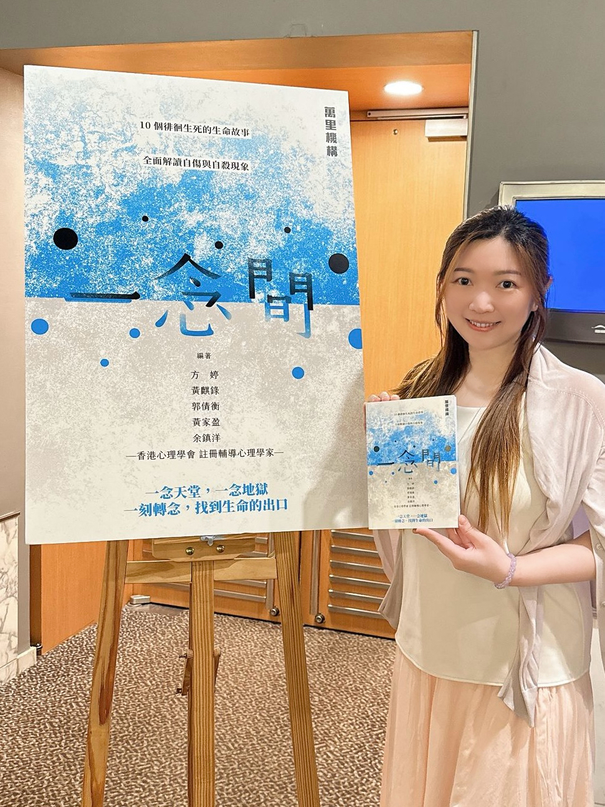

關於我
香港心理學會（HKPS）註冊輔導心理學家
入行從來不是因為一個宏大的理想。當年其中一個選修科讀到心理學，覺得這科目適合自己，便一路走下去。做著做著，卻漸漸發現，原來自己也喜歡在一個真誠的空間裡與人對話，見證彼此的成長。這份發現，讓我留下來。
超過十年臨床經驗，陪伴兒童、青少年及成年人走過不同的人生階段。多年來，我越來越意識到，香港的助人專業發展蓬勃，不同專業各有所長。我希望能透過自己的工作，讓更多人了解輔導心理學家的角色與價值。
輔導工作需要持守專業操守，並不斷學習與自我反思。目前重心在研究、督導培訓及寫作，暫未開放個案諮詢。
現時暫未開放個案諮詢資歷
培訓
工作範疇